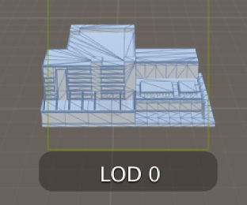

Level of Detail (LOD)
When a GameObject in the scene is a long way from the camera, the amount of detail that can be seen on it is greatly reduced. However, the same number of triangles will be used to render the object, even though the detail will not be noticed. An optimisation technique called Level Of Detail (LOD) rendering allows you to reduce the number of triangles rendered for an object as its distance from the camera increases. As long as your objects aren't all close to the camera at the same time, LOD will reduce the load on the hardware and improve rendering performance.
In Unity, you use the LOD Group component to set up LOD rendering for an object. Full details are given on the component reference page but the images below show how the LOD level used to render an object changes with its distance from camera. The first shows LOD level 0 (the most detailed). Note the large number of small triangles in the mesh:

The second shows a lower level being used when the object is farther away. Note that the mesh has been reduced in detail (smaller number of larger triangles):

Since the arrangement of LOD levels depends somewhat on the target platform and available rendering performance, Unity lets you set maximum LOD levels and a LOD bias preference (ie, whether to favour higher or lower LOD levels at threshold distances) in the Quality settings.
LOD Naming Convention for Importing Objects
If you create a set of meshes with names ending in _LOD0, _LOD1, _LOD2, etc, for as many LOD levels as you like, a LOD group for the object with appropriate settings will be created for you automatically on import. For example, if the base name for your mesh is Player, you could create files called Player_LOD0, Player_LOD1 and Player_LOD2 to generate an object with three LOD levels. The numbering convention assumes that LOD 0 is the most detailed model and increasing numbers correspond to decreasing detail.